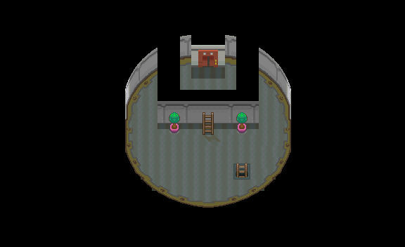
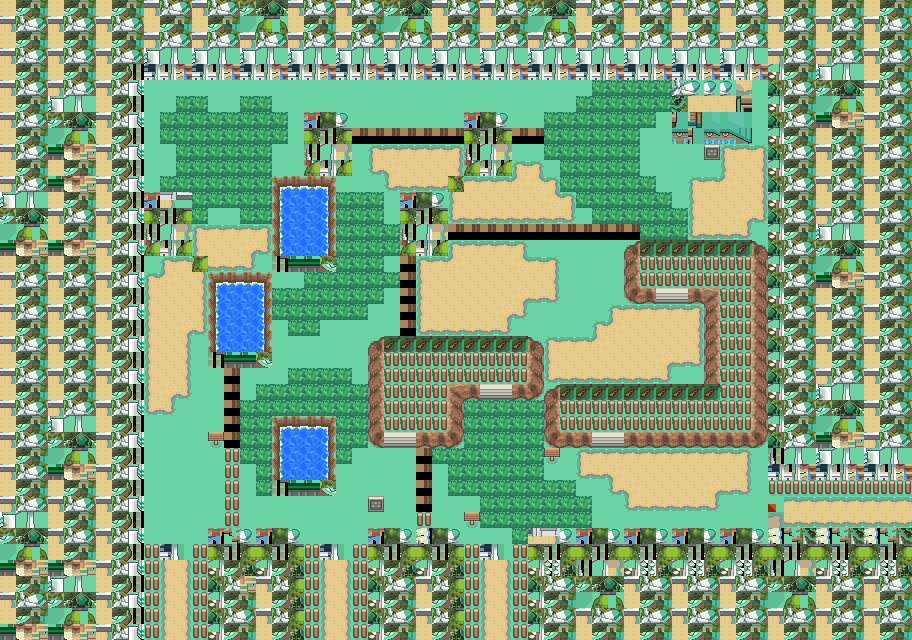

攻击增强剂
宝可梦营养饮料。
获取：玉虹市·商店 ／ 满金市·商店 ／ 阿露福遗迹(34,18) ／ 光辉灯塔(6,11) ／ 野生原野区(33,5) ／ 桐树林(8,14) ／ 铃铛塔(27,15) ／ 火箭队基地(7,20) ／ …等 11 处
用途
宝可梦营养饮料。 提升1只宝可梦的10攻击努力值。
标价 10000 口袋：道具
获取方式
购买
地面隐藏
人物剧情
- 野生原野区（区域136） · (33,5) · 与坐标处人物交互 · 数量 1 · 地图｜静态图 · 触发条件待补
- 桐树林（区域182） · (8,14) · 与坐标处人物交互 · 数量 1 · 地图｜静态图 · 触发条件待补 · 相同来源 2 条
- 铃铛塔（区域135） · (27,15) · 与坐标处人物交互 · 数量 1 · 地图｜静态图 · 触发条件待补 · 相同来源 2 条
- 火箭队基地（区域133） · (7,20) · 与坐标处人物交互 · 数量 1 · 地图｜静态图 · 触发条件待补
- 50号水路（区域130） · (9,47) · 与坐标处人物交互 · 数量 1 · 地图｜静态图 · 触发条件待补
- 湛蓝市（区域150） · (18,11) · 与坐标处人物交互 · 数量 1 · 地图｜静态图 · 触发条件待补
- 冰天地（区域181） · (53,12) · 与坐标处人物交互 · 数量 1 · 地图｜静态图 · 触发条件待补
数据来源
- 来源文档：out/items.json（
/64） - 表索引 index 0064；内嵌 itemId 64；口袋 ITEMS (id=1)；type 1；hold_effect 0/0；importance 0；unk19 0
- 获取来源文档：encounters_research/out/shops.json、maps_research/out/events/events.json、maps_research/out/scripts/scripts.json
- 获取记录 ID：
shop:0816BCAC:1:10:4、shop:0816BCAC:1:50:17、hidden:1:49:8、hidden:49:14:8、script_item_candidate:std:081BE822:1:65、script_item_candidate:std:081BEB6F:1:121、script_item_candidate:std:081BEB6F:1:59、script_item_candidate:std:087BB093:56:46、script_item_candidate:std:08AE003D:3:103、script_item_candidate:std:08EE1B0C:3:73、script_item_candidate:std:08F4ED64:53:4 - 说明文字解码来源：
reference/SAVE_HOME_GAME_DATA.json.charmap
相关支线
任务可能要求携带本条目，或将其作为奖励；具体用途见任务步骤。
地点地图
共享RGB底图；点击可缩放定位。数字对应本页相关地点，不代表地图上全部事件。
玉虹市

1 攻击增强剂（1,6）
满金市

1 攻击增强剂（22,6）
阿露福遗迹

1 攻击增强剂（34,18）
光辉灯塔

1 攻击增强剂（6,11）
野生原野区

1 攻击增强剂（33,5） 底图有1个图块缺少原始数据。
桐树林


1 攻击增强剂（8,14）